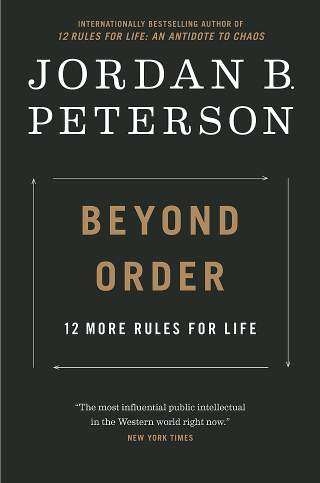

This isn't just about posture. It's about acting as if you can handle responsibility. Peterson draws on lobster hierarchy research to suggest posture influences serotonin levels, impacting confidence and willingness to face challenges. It's a feedback loop: act confident, become more confident.
We're often better at caring for others than ourselves. This rule challenges that imbalance, urging self-compassion and proactive self-care. It's about recognizing your own inherent worth.
Your social circle profoundly impacts your life. Surrounding yourself with supportive, ambitious individuals fosters growth. Toxic relationships drain energy and hinder progress.
The comparison game is a losing one. Focus on personal improvement, tracking your own progress. This fosters a growth mindset and avoids the pitfalls of envy and inadequacy.
This is arguably the most controversial rule. It's not about being harsh, but about effective discipline. Peterson argues that children need boundaries and consequences to develop into responsible, socially acceptable adults. Allowing bad behavior doesn't help them; it harms them. It's about long-term well-being, not short-term comfort.
Before attempting to fix the world's problems, address your own. This emphasizes personal accountability. Cleaning up your own life provides a stable base from which to engage with larger issues. It's about avoiding hypocrisy and building credibility.
Short-term pleasure often leads to long-term dissatisfaction. Meaningful pursuits, while challenging, provide lasting fulfillment. This requires identifying your values and aligning your actions with them.
Honesty is foundational to trust and a coherent life. Lying creates internal conflict and erodes relationships. Facing uncomfortable truths, even about yourself, is crucial for growth.
Humility and open-mindedness are essential for learning. Active listening allows you to gain new perspectives and challenge your own assumptions. It's about recognizing the limits of your own knowledge.
Vague language leads to misunderstandings and conflict. Clear, concise communication fosters clarity and resolution. This rule emphasizes the power of language to shape reality.
This is a metaphor for allowing individuals to take calculated risks and learn from their experiences. Overprotectiveness stifles development and prevents the acquisition of resilience. It's about trusting in the process of growth and allowing for failure.
Life is filled with suffering, but it also contains moments of beauty and joy. This rule encourages appreciating the small things, finding solace in simple pleasures, and acknowledging the inherent goodness in the world. It's a reminder to be present and grateful.
Life Is Suffering: Peterson doesn't shy away from the harsh realities of existence. He argues that acknowledging suffering is the first step towards overcoming it. Order vs Chaos: This is a central concept. Order represents predictability, stability, and meaning. Chaos represents the unknown, uncertainty, and potential danger. Growth happens at the edge of chaos, where we are challenged to adapt and evolve. Truth Matters: Living authentically and honestly is crucial for building a meaningful life. Discipline Leads to Freedom: Structured habits and self-discipline aren't restrictive; they enable freedom by providing a framework for achieving goals and navigating challenges. In conclusion, Peterson's 12 Rules aren't a quick fix for life's problems. They are a set of principles designed to encourage personal responsibility, meaning-making, and a courageous embrace of the complexities of existence. They are often challenging, requiring introspection and a willingness to confront uncomfortable truths. However, they offer a powerful framework for building a more fulfilling and resilient life.